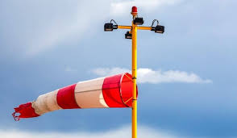

Environment Products
The innovations of LIDAR technology, based on extensive R&D efforts, have evolved into impactful environmental applications. A multitude of atmospheric detection applications allow us to address the challenges of air pollution, emissions identification, reduction andelimination, as well as risk management of environmental hazards.
Marine Applications
Devices that provide vital information on detection and measurement of pollutants produced by ships, as well as other sea pollution sources
Industrial and Agricultural Applications
Devices that monitor emissions and help industry or farm owners minimize pollution while optimizing productivity.
Climate Services

Devices that provide data to support climate projections as well as state of the art seasonal prediction systems.